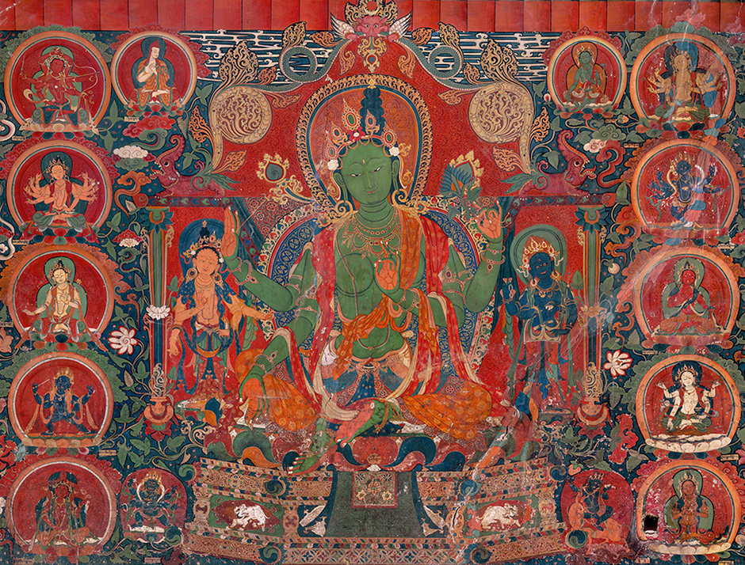
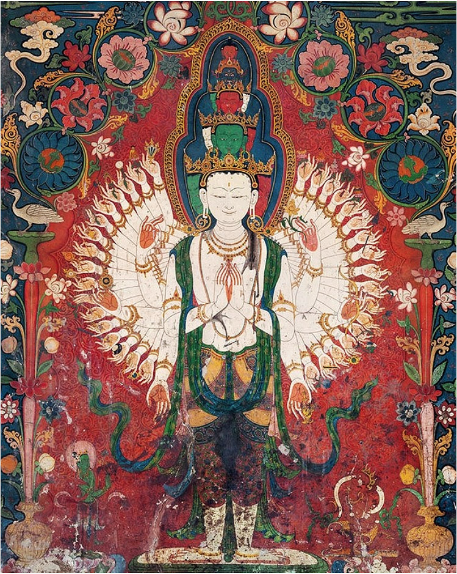

6 Meditazione Tonglen nel Bodhicaryāvatāra
Introduzione
In questo capitolo esamineremo la pratica della meditazione tonglen, proposta da Śāntideva nel Bodhicaryāvatāra. La meditazione tonglen, dello scambio di sé e altri, costituisce il principale modello per le meditazioni guidate della coltivazione secolarizzata della compassione.
Śāntideva era un monaco buddista indiano Mahāyāna. Si sa molto poco della vita di Śāntideva. È generalmente accettato che sia vissuto tra la fine del VII e la metà dell’VIII secolo d.C. Le biografie tradizionali tibetane affermano che ha trascorso gran parte della sua carriera presso l’università monastica indiana di Nālandā. Fu autore di due testi sopravvissuti, l’Introduzione alla pratica del risveglio (Bodhicaryavatāra) e il Compendio degli addestramenti (Śikṣāsamuccaya; di seguito ŚS). L’influenza filosofica di Śāntideva è più significativa nel campo della filosofia morale, laddove i suoi due testi forniscono importanti contributi allo studio della virtù, del benessere e della relazione tra metafisica ed etica. Il nono capitolo del Bodhicaryāvatāra, inoltre, presenta anche un’influente discussione del principio metafisico centrale del Madhyamaka, ovvero la vacuità (śūnyatā).
Recentemente, Śāntideva ha subito una rinascita di popolarità, con un certo numero di influenti praticanti contemporanei del buddismo tibetano, tra cui il quattordicesimo Dalai Lama e Pema Chödrön, che ne hanno scritto dei commentari sulle sue opere (Gyatso 1994; Chödrön 2007). Gli ultimi decenni, inoltre, hanno anche visto un aumento dell’attenzione accademica al Bodhicaryāvatāra. Il Bodhicaryāvatāra è stato spesso caratterizzato come il testo più significativo per lo studio dell’etica buddista indiana (Goodman 2009; Garfield 2012).
Prima di esaminare la meditazione tonglen, spenderemo alcune parole sulla pratica della meditazione in generale. Questo è un argomento complesso che può essere presentato da molti punti di vista. Il recente The Oxford Handbook of Meditation, Miguel Farias (ed.) del 2021, ad esempio, presenta una trattazione sistematica di questo tema. Le pratiche contemplative sono presenti in molte culture diverse. All’inizio del IX secolo, per esempio, il mistico sufi iracheno al-Hallaj dichiarò che il suo sempre più profondo assorbimento in Dio lo aveva portato all’unione con il divino; questa controversa affermazione contribuì in seguito alla sua esecuzione come eretico e ribelle contro le autorità locali. In quello stesso periodo, nelle grotte della Thailandia, i monaci buddisti dedicavano innumerevoli ore immobili per lo sviluppo della loro coscienza. Più a ovest, i monaci cristiani sedevano nelle loro celle recitando le scritture allo scopo di consentire alla luce divina di affondare sempre più profondamente nei loro cuori. Ciò che questi, e molti altri tipi di “meditazione”, hanno in comune, nel corso della storia, è l’obiettivo di queste pratiche che non si limita al desiderio di una maggiore “focalizzazione della consapevolezza”, ma bensì si pone l’obiettivo di riuscire a controllare e a modellare il sé attraverso delle pratiche mentali che Michel Foucault (1998, p. 18) ha chiamato “tecnologie del sé” e Ignatius Loyola ha chiamato “esercizi spirituali” (Spiritual Exercises, no. 1).
6.1 La meditazione come auto-trasformazione
Secondo Jessica Frazier (2021), la meditazione solleva importanti domande sulla natura della nostra vita cosciente: esiste un modo per controllare e modellare il “sé”, quel misterioso insieme di percezioni, riflessioni, sentimenti e azioni che costituisce quello che siamo, ma che sembra sempre sfuggirci ed è così difficile da definire? Quali forme di pratica devono essere adottate per riuscire a cambiare il nostro modo di pensare e i nostri desideri? Qual è la natura del senso di agenzia che esercitiamo su noi stessi, e quali obiettivi potremmo voler raggiungere se potessimo trasformare l’esperienza di cui la nostra vita è costituita? Le diverse tradizioni delle pratiche di meditazione consentono gli individui a ridefinire la loro vita mentale all’interno di un nuovo insieme di abitudini e a rimodellare i propri obiettivi. In questo senso la meditazione può essere considerata come una risorsa che è invece non è disponibile a coloro che si limitano a ricevere passivamente i contenuti della propria mente senza essere in grado di intervenire su di essi.
La nebulosa nozione moderna di “meditazione” è una sintesi di idee europee e asiatiche che sono accomunate dall’idea di un prolungato impegno costruttivo della mente volto a trasformare alcuni aspetti dell’esperienza. Gli Yoga Sūtra (ca. 300 a.C.– 300 d.C.) sono probabilmente il primo manuale di meditazione esistente, nel senso che delineano un programma disciplinato (sādhana, o pratica “regolare”) finalizzato alla coltivazione di uno stra-ordinario stato di esperienza (samādhi, o “assorbimento”) che può aiutare a raggiungere una benefica trasformazione del sé (kaivalya, o “puro isolamento”), in senso spirituale o psicologico.
Tra le tante forme che le pratiche della meditazione hanno assunto, una particolare forma di meditazione che è rilevante per la presente discussione è quella che potremmo chiamare la “meditazione decostruttiva”. Alcune pratiche di contemplazione, infatti, consentono ai materiali di cui è costituito il sé di essere trasmutati in qualcosa di nuovo. Nelle sue forme più radicali, la meditazione cerca addirittura di interrompere o distruggere la struttura del sé per ristrutturare, dopo questa fase di decostruzione, le idee e gli schemi che conferiscono coerenza al sé, creando una nuova struttura della personalità o della mente.
L’assorbimento meditativo dissolve la struttura bipartita soggetto/oggetto, di un sé che osserva e degli oggetti (corpo, emozioni) che vengono osservati. L’attenzione non si concentra più su alcun oggetto particolare, se non sui puri qualia (aspetti qualitativi delle esperienze coscienti) della consapevolezza stessa. La meditazione può dunque essere intesa come una forma di attenzione auto-riflessa diretta alla propria vita interiore. La consapevolezza immobile, concentrata, che ne risulta è molto lontana da qualsiasi caratteristica normale del sé che sperimentiamo abitualmente.
Le pratiche buddiste tibetane che coltivano la “‘chiarezza’ e ‘stabilità’ della consapevolezza” (Thompson, 2015, p. 76) cercano, nel contempo, di ridurre al minimo la presenza del sé, de-costruendo sistematicamente il senso di agenzia del sé, in modo da indebolire la struttura centralizzata e dualista che sostiene l’individualità. La meditazione buddista mira a un tipo di “non sé” che non è né una “persona” né “un’entità cosciente” in alcuna delle forme con cui normalmente abbiamo a che fare, ma invece promuove processi di coscienza liberati dalla struttura del “sé” e da un senso di agenzia personale. Le pratiche della meditazione tibetana consentono ai loro praticanti di alterare aspetti specifici della mente. Come strumenti di ri-modellamento mentale, usano l’attenzione selettiva per dirigere la nostra esperienza verso contenuti specifici e alterare di conseguenza il nostro contenuto mentale; usano contenuti razionali per alterare la nostra concettualizzazione dei mondi interno ed esterno, intensificano l’intensità e la portata emotiva con cui elaboriamo i prodotti della nostra attenzione, disimpegnano le strutture cognitive al fine di decostruire selettivamente le caratteristiche della coscienza o dell’“individualità” nel suo insieme, spostano i dati che normalmente “possediamo” come parte della nostra identità per ricostruire un nuova personalità sulla base di nuovi schemi mentali. Il fine non è solo quello di “decostruire” il sé, ma anche quello di “ricostruirlo” creativamente.
Le pratiche contemplative mettono in luce il fatto che la mente è capace di assumere più forme di quanto la vita quotidiana e la psicologia convenzionale sembrano suggerire. La mente è un complesso intrinsecamente malleabile di processi dinamici che viene modellato sia da filtri attenzionali locali, sia da filtri più generali che controllano e regolano il tessuto del sé tramite concetti e valori di ampia portata. In contrasto con il cogito centralizzato, stabile e coerente implicito in Cartesio, l’ontologia del sé meditativo è dinamica e autocreativa: è meno simile a una “lampada” che si affaccia su un mondo che cambia, e più simile a un sistema meteorologico dinamico che costantemente interagisce con se stesso.
La meditazione tonglen proposta da Śāntideva costituisce una delle forme più estreme di decostruzione e ri-costruzione creativa del sé. Esamineremo qui di seguito i passaggi del Bodhicaryāvatāra che sono serviti come risorsa per la meditazione tonglen.
6.2 Il Bodhicaryāvatāra
La versione canonica del Bodhicaryāvatāra è composta da dieci capitoli per un totale di 913 versi. Lo scopo principale sia del Bodhicaryāvatāra è di istruire il lettore nello sviluppo delle qualità virtuose del bodhisattva. Queste includono le sei perfezioni (pāramitās) di generosità (dāna), moderazione etica (śīla), pazienza (kṣānti), sforzo energetico (vīrya), concentrazione (samādhi) e saggezza (prajñā), nonché altre associate virtù come la compassione (karuṇā), la consapevolezza (smṛti) e l’introspezione (saṃprajanya).
Si deve tenere a mente che il Bodhicaryāvatāra non è solo un testo teorico inteso a fornire una comprensione concettuale della virtù e della motivazione morale. Piuttosto, è un manuale di meditazione il cui scopo è aiutare nello sviluppo della virtù per coloro che sono impegnati nel sentiero del bodhisattva. Più propriamente possiamo dire che il Bodhicaryāvatāra è un testo plurale, ambiguo e “non sistematico”. È plurale perché può essere letto in molti modi: come un manuale di rituali, una guida alla meditazione, un’indagine sull’etica, un trattato di metafisica, un’autointerrogazione psicologica, un grande poema devozionale, o tutto quanto sopra. È ambiguo perché il suo significato preciso, soprattutto nei suoi passaggi filosofici cruciali, è stato dibattuto per secoli in India, per un millennio (e oltre) tra i pensatori tibetani, e ora è dibattuto in Occidente da accademici e praticanti buddisti. Ed è, senza dubbio, non-sistematico. Certamente, in una certa misura è strutturato, seguendo più o meno da vicino lo sviluppo dell’addestramento di un bodhisattva cristallizzato nelle sei perfezioni (pāramitā). Altrettanto spesso, tuttavia, è caratterizzato da un approccio poetico e improvvisato.
Per queste sue caratteristiche, è difficile produrre un commentario sistematico del Bodhicaryāvatāra; eppure questo è precisamente il trattamento che questo testo ha ricevuto nelle tradizioni scolastiche, specialmente in Tibet, dove per mille o più anni ha plasmato la comprensione di cosa significhi essere un bodhisattva. Nonostante l’occasionale mancanza di struttura, la genialità poetica, filosofica e psicologica del Bodhicaryāvatāra, per non parlare della sua influenza in India, hanno reso questo testo un riferimento impossibile da ignorare. Pertanto, nel secondo millennio, gli scolastici del Tibet hanno cercato di “addomesticare” il Bodhicaryāvatāra e di riportare questo testo sotto il controllo intellettuale dell’istituzione monastica. Nella tradizione tibetana, il più famoso tentativo di “addomesticare” il Bodhicaryāvatāra è stato quello proposto da Tsong Kha Pa.

6.3 Bodhicitta e il Voto del Bodhisattva
Il Bodhicaryāvatāra istruisce i bodhisattva su come impegnarsi (avatāra) nella pratica (cariā) di tutte le qualità spirituali necessarie per raggiungere la meta più alta, ovvero il risveglio (bodhi). Il testo descrive in dieci capitoli la generazione, la preservazione e lo sviluppo del bodhicitta, ovvero la progressione dell’addestramento sempre più avanzato di un bodhisattva sul sentiero dello sviluppo spirituale.
Un concetto centrale del Bodhicaryāvatāra è, appunto, il bodhisattva, la “creatura in risveglio”, l’essere (sattva) che giura di raggiungere il pieno risveglio (bodhi) di un buddha per operare nel modo più efficace a beneficio degli esseri senzienti. Il Bodhisattva non vuole raggiungere il nirvāna per sé ma farlo raggiungere agli altri, e, a questo scopo procrastina infinitamente la sua entrata nel nirvāna per adoperarsi, nel mondo della trasmigrazione, al bene di tutte le creature. La motivazione per raggiungere questo obiettivo è bodhicitta, la mente (citta) dedicata al pieno risveglio (bodhi).
I primi quattro capitoli del Bodhicaryāvatāra sono incentrati su bodhicitta: il primo ne elogia le qualità virtuose; il secondo e il terzo presentano un rituale del voto del bodhisattva; il quarto si concentra sul mantenimento del bodhicitta. Questi primi capitoli sottolineano lo stato pericolosamente instabile in cui ci troviamo prima di entrare nel sentiero del bodhisattva. I capitoli IV-VI descrivono il mantenimento di bodhicitta attraverso l’attenzione, l’introspezione e la tolleranza. I capitoli VII-IX descrivono il potenziamento di bodhicitta attraverso la diligenza, la concentrazione meditativa e la saggezza. Il X capitolo contiene le dediche dell’opera.
I:5. In una notte oscura, piena di nuvole, un lampo brilla forse più di un istante? Parimenti, grazie al potere dei Bhudda, la mente dele creature si rivolge talvolta, per un istante, verso il bene.
I:6. Il bene è dunque sempre debole e il male invece forte e tremendo. Che bene mai sarebbe in grado di vincerlo, se non il pensiero del risveglio?
I versi propongono due punti sorprendenti e filosoficamente significativi.
- Primo, le menti di coloro che si situano al di fuori del sentiero del bodhisattva sono depravate, incapaci di concentrarsi sullo sviluppo virtuoso con qualunque coerenza. Il vizio (pāpa) qui indica le afflizioni mentali (kleśas), in particolare la brama (lobha), la rabbia (krodha) e l’illusione (moha). Le nostre disposizioni (anuśaya) per il loro sorgere sono così forti che un’attività virtuosa coerente è impossibile.
- In secondo luogo, il bodhicitta è la migliore, o forse l’unica, soluzione alla nostra difficile situazione. Questo è sorprendente, dal momento che sviluppare bodhicitta e intraprendere il sentiero del bodhisattva richiede di rimanere nel saṃsāra per eoni, durante i quali si perfeziona la generosità sacrificando il proprio corpo (BCA 7:20–22) e ripetendo volontariamente il ciclo doloroso delle rinascite (BCA 8: 107–108) al fine di operare a beneficio degli altri.
6.4 Equalizzazione e scambio di sé e dell’altro
Nell’ottavo capitolo, intitolato “Concentrazione meditativa”, Śāntideva descrive la meditazione su karuṇā:
VIII:90. Prima di tutto egli deve riflettere attentamente sull’uguaglianza tra sé e gli altri: «Tutti hanno le mie stesse pene e i miei stessi piaceri e debbo dunque proteggerli come me stesso».
VIII:91. A quel modo che il corpo, nonostante al diversità dele membra, è protetto come un essere unico, così deve farsi pure del mondo, costituito da esseri diversi che hanno in comune il dolore e la gioia.
VIII:92. Se li mio dolore non è sentito dai corpi degli altri, esso, per me, è nondimeno un dolore difficile a sopportare, a causa dell’attaccamento all’io.
VIII:93. Similmente, anche se il dolore di un altro non è sentito da me, esso, per lui, è nondimeno un dolore difficile da sopportare, a causa dell’attaccamento all’io.
VIII:94. Io debbo combattere il dolore degli altri perché esso è dolore, come il mio. Io debbo fare il bene degli altri, perché sono esseri viventi, come me.
VIII:95. Io e gli altri aspiriamo ugualmente ala felicità: quali caratteri particolari presenta l’io per meritare, lui solo, tutti gli sforzi?
Va notato che il Bodhicaryāvatāra non insegna esplicitamente la coltivazione della compassione, ma bensì la generazione di bodhicitta. In altre parole, la coltivazione della compassione non è intesa come una pratica a sé stante, ma invece come una componente di un processo più generale, ovvero quello della generazione di bodhicitta. Come in altri testi della letteratura Mahāyāna, il Bodhicaryāvatāra fornisce una gerarchia di virtù, in cui karuṇā non è classificata come la virtù più eccellente, ma è subordinata al bodhicitta.
Il bodhicitta è definito mediante due caratteristiche: “Attraverso karuṇā, [bodhicitta] si concentra sul benessere degli altri, attraverso prajña, [bodhicitta] si concentra sulla perfetta illuminazione”. Pertanto, bodhicitta e karuṇā differiscono nella loro prospettiva soteriologica, ma a causa della sovrapposizione di significati, istruzioni sulla coltivazione della compassione possono essere individuate all’interno delle descrizioni di bodhicitta.
6.5 Il supremo mistero
VIII:120. Colui che desidera salvare rapidamente se stesso e gli altri, deve praticare il supremo mistero, voglio dire lo scambio dell’io e degli altri.
Il Bodhicaryāvatāra è una combinazione di tradizione e innovazione e questo vale anche e soprattutto per la pratica dello scambio di sé e di altri (parātmaparivartana). Per il bodhisattva, gli altri debbono essere sentiti come il proprio sé e viceversa il suo sé come ciò che sono gli altri per l’uomo ordinario. La presentazione di questa pratica arriva al culmine di un lungo discorso sull’importanza di abbandonare l’attaccamento a se stessi e di prendersi cura invece del benessere degli altri. Nella meditazione su parātmaparivartana, Śāntideva mette in pratica il “capovolgimento” di sé e di altri dissolvendo l’ego del meditatore.
VIII:140. Considera dunque le creature, cominciando dalle più umili, come te stesso e te stesso come gli altri;
Śāntideva cerca di letteralmente formare mediante “gli altri” un nuovo concetto di “io” (ahamkāra), che normalmente si considererebbe il “sé”. Per applicare questa idea in pratica, Śāntideva scambia pronomi e persone grammaticali in modo che la terza persona si riferisca al meditatore e la prima persona ad “altri”. Il nuovo “io” che sono gli altri può allora provare invidia e disprezzo verso il “colui” che era il “sé” originario. Śāntideva si immagina che “lui” — cioè se stesso — appaia felice, ricco e lodato, mentre “io” — l’altro — “sono” miserabile, povero e disprezzato; “Io” (cioè l’altro) “dovrei invidiare” l’altro (cioè il sé originario).
VIII:141. Come? Costui è onorato ed io no! Costui ricco ed oi povero! Egli lodato, io biasimato! Io pieno di dolori, egli felice!
VIII:142. Io lavoro ed egli si riposa a suo bell’agio! Egli è, apparentemente, grande nel mondo ed io piccolo, privo apparentemente di qualità!
Avendo immaginato se stessi dal punto di vista di un inferiore invidioso, poi Śāntideva si immagina il punto di vista inverso di un altro superiore sprezzante, sempre invertendo il ruolo di “io” e “altro”. Śāntideva chiama “supremo mistero” (parama guhya; VIII-120) questo scambio di posizioni soggettive, ovvero la capacità di mettere da parte la propria prospettiva personale per rendere possibile, letteralmente, all’altro di dimorare dentro il sé.
Questo artificio letterario di scambio di prospettiva disorienta il lettore e lo costringe ad una lettura ripetuta del testo per rendersi conto di cosa stia succedendo. L’incertezza che il lettore prova relativamente ai referenti dei pronomi personali ben si adatta all’esercizio dello scambio di sé e di altri, il quale ha lo scopo di destabilizzare la posizione soggettiva del lettore. La pratica dello scambio di sé e di altri comporta una fluidità delle soggettività implicate: né il narratore né il lettore pretendono di sapere cosa pensano e sentono tutti, da ogni punto di vista. Piuttosto, l’idea è quella di abbandonare l’attaccamento al proprio punto di vista particolare al fine di rendersi conto di quale sia il punto di vista degli altri. Si scopre così che gli altri hanno sentimenti e desideri simili ai nostri, anche se da prospettive diverse.
L’idea del “capovolgimento”, del superamento della nozione di sé e altri è già stata introdotta in precedenza come uno dei metodi dell’approccio didattico cognitivo-analitico della coltivazione della compassione. Gli studiosi buddisti Asaṅga, Vasubandhu, Nāgārjuna, Candrakīrti e altri hanno approfondito questo tema fornendo varie motivazioni filosofiche, fenomenologiche o ontologiche, a sostegno dell’equanimità.
- L’approccio fenomenologico si riferisce alle esperienze in prima persona della gioia e del dolore degli altri: “Nella gioia e nel dolore tutti gli esseri sono uguali”. A causa dell’identità postulata, Śāntideva afferma che si può provare, in prima persona, il dolore dell’altro, se si sceglie di identificarsi con lui.
- La prospettiva ontologica allude alla visione della realtà come non dualità o vacuità. L’accento è posto sull’idea del tutto, cioè di un insieme più grande che comprende tutte le creature.
VIII:114. Le proprie membra son considerate come parti del corpo; perché non considerare gli esseri viventi come parti ugualmente dello stesso mondo?
Questa totalità corrisponde all’umanità e, in essa, i confini tra gli individui scompaiono essendo considerato, ciascuno di noi, in primo luogo, come una parte dello stesso insieme, della stessa unità. Una seconda linea di argomentazione proviene dall’Abhidharma, il quale postula l’assenza di un sé il quale viene concepito solo come un conglomerato di componenti; pertanto è un’illusione credere nella continuità della coscienza, o all’esistenza di un sé separato dagli altri e dotato di caratteristiche immutabili, dato che le componenti del sé variano costantemente, e, dunque, non esiste un sé immutabile e permanente.
Da entrambe le argomentazioni (quella fenomenologica e quella ontologica) deriva la medesima conclusione, ovvero la necessità di estendere la compassione in modo equo e imparziale a tutte le creature. In tale richiesta di cura altruistica per gli altri, Śāntideva attinge a fonti precedenti. La proposta della meditazione tonglen, invece, può essere fatta solo in parte risalire a precedenti fonti scritturali. La meditazione tonglen costituisce un contributo innovativo di Śāntideva per il modo in cui, combinando diverse linee di pensiero, offre un complesso gruppo di esercizi contemplativi, analitici e pratici, che hanno l’obiettivo di suscitare un radicale cambiamento di prospettiva cognitiva nel praticante.

6.6 Una lettura dettagliata
I versi Bodhicaryāvatāra VIII:90-112 sono identificati dai commentatori come il passaggio relativo al “capovolgimento”, ovvero l’equalizzazione e lo scambio di sé e di altri, e presentano l’interpretazione di Śāntideva dell’idea Mahāyāna di equanimità. La sfida interpretativa relativa a questo testo risiede nel fatto che Śāntideva tratta la sofferenza come un’entità esistente, mentre postula la non esistenza del sé.
VIII:103. Ma (tu dirai) se non esiste nessun essere sofferente, perché combattere il dolore?
Questo argomento della “sofferenza senza proprietario”, pone una sfida ermeneutica perché afferma la non esistenza delle persone, ma allo stesso tempo sostiene l’esistenza della sofferenza: se il sé non esiste, la sofferenza non esiste e quindi non ci dovrebbe essere neppure alcune motivazione per un’azione compassionevole.
Una possibile risoluzione di questo paradosso è stato proposta da Thokmé Sangpo e si basa su una argomentazione di tipo personale, piuttosto che ontologico:
- sebbene sia corretto affermare che sia il sofferente sia la sofferenza non esistano (in quanto sono entrambe prive di esistenza intrinseca), per rimuovere la mia sofferenza è necessario anche rimuovere la sofferenza degli altri;
- e, per lo stesso motivo, se la sofferenza degli altri non viene rimossa, neppure la mia sofferenza non può essere rimossa.
Thokmé Sangpo si concentra dunque su una dimensione esperienziale personale: non discute la sofferenza degli altri come un’affermazione ontologica su ciò che esiste o non esiste, ma è invece interessato a trasformare l’esperienza umana. Riconosce la verità della non esistenza ultima della sofferenza, ma vuole concentrarsi sul miglioramento dell’esperienza vissuta, cioè sull’eliminazione della sofferenza provata in prima persona. Thokmé Sangpo usa dunque i versi di Śāntideva come uno strumento terapeutico per smantellare l’autoidentificazione o l’attaccamento a sé stessi – non come una descrizione ontologica che in sé deve essere coerente.
Nel Bodhicaryāvatāra leggiamo:
VIII:103. Perché, quanto a ciò, son tutti d’accordo. E se esso dev’essere combattuto, sia allora combattuto in tutti i suoi aspetti! Se poi non dev’essere combattuto, non lo sia affatto, né in me né in altri!
VIII:107. Avendo così coltivato i propri pensieri, paghi e gioiosi di calmare il dolore degli altri, ibodhisattva si immergono nell’inferno, come cigni in un bosco di loti.
VIII:108. La liberazione delle creature è per essi un oceano di gioia. Il fine è raggiunto. A che pro’ un’insipida liberazione (personale)?
Questo punto è importante, non solo in relazione al Bodhicaryāvatāra. Anche l’opera di Nagarjuna e, in generale, la scuola Mādhyamika, sono state accusate di contenere delle aporie insuperabili dal punto di vista logico. Ma la scuola Mādhyamika ha ripetuto molte volte, nel modo più chiaro possibile, che non è interessata a proporre un sistema filosofico (dṛṣṭi), una teoria della realtà. I suoi obiettivi, così come quelli di Śāntideva, sono soteriologici, non ontologici. E questo riflette fedelmente il pensiero originale del Buddha, così come espresso nella Tripiṭaka, ovvero il completo disinteresse verso “le domande ultime” (l’origine e la fine dell’universo), ciè verso le questioni di tipo ontologico – questo è un argomento che verrà ripreso nel Capitolo 7.
Secondo l’approccio Mādhyamika condiviso da Śāntideva, l’idea apparentemente naturale e intuitiva di un sé indipendente è in realtà una percezione errata, una disfunzione mentale.
VIII:134. Tute le calamità, tutti i dolori, tutti i perigli del mondo derivano da una cosa soltanto, cioè dall’attaccamento all’io; perché dunque attaccarmici?
La sofferenza è dunque la conseguenza di un malinteso di fondo. Quindi, non il “male” ma avidyā (la nescienza o ignoranza – della insussistenza della distinzione “ontologica” tra sé e gli altri – è la “radice” (mūla) del mondo della trasmigrazione (saṃsāra), ovvero di dukkha. Per Śāntideva, avidyā si manifesta come egoismo (ahāṃkāra) e culmina nell’attaccamento al sé come corpo, o come anima individuata (jīva). Secondo Śāntideva, tutte le disgrazie nel mondo sono dovute all’attaccamento alla falsa nozione del sé.
È questa falsa credenza in un sé immutabile che Śāntideva identifica anche come il principale impedimento a una mente compassionevole. Poiché l’attaccamento all’ego è una credenza fuorviante acquisita attraverso l’abitudine, secondo Śāntideva il rimedio ad un tale errore è un appropriato allenamento mentale. Il rimendio che viene proposto è il tonglen, il “capovolgimento”, ovvero il superamento della nozione di sé e di altri.
Le meditazioni che Śāntideva propone nel Capitolo VIII non mirano direttamente a decostruire il concetto di sé (svabhāva), poiché questo sarà l’argomento del successivo Capitolo IX sulla Saggezza. Hanno invece lo scopo di decostruirre il senso di sé indirettamente, mettendone in dubbio la struttura psicologica, emotiva e comportamentale.
Śāntideva introduce tre approcci per meditare sullo scambio di sé e di altri:
- lo scambio di autoidentificazione (concettuale),
- lo scambio di valutazione emotiva (valutativo),
- lo scambio di beni spirituali (obiettivo).
6.6.1 Lo scambio concettuale di autoidentificazione
Il primo tipo di scambio è il trasferimento concettuale dell’autoidentificazione (Skt. ātmabhāva) con un’altra persona, ovvero l’idea di mettersi nei panni di un’altra persona. Śāntideva descrive una serie di meditazioni nelle quali il meditatore assume la prospettiva di una altra persona e poi “guarda indietro” la propria persona precedente. È importante notare che Śāntideva tratta queste contemplazioni come una pratica esperienziale, non come una riflessione astratta. È attraverso la pratica ripetuta di tali contemplazioni che verrà creato un nuovo modo di rapportarsi a sé e agli altri.
6.6.2 Lo scambio di valutazione emotiva
Il secondo tipo di scambio si riferisce a un cambiamento di atteggiamento verso se stessi e gli altri. La sua motivazione è simile alla teoria della valutazione cognitiva secondo la quale le nostre reazioni emotive dipendono dalla nostra valutazione cognitiva della situazione in cui ci troviamo.
Śāntideva propone che, se ci identifichiamo con un’altra persona così strettamente come facciamo ora con noi stessi, allora svilupperemo naturalmente una pari quantità di preoccupazione, amore e cura che abbiamo per noi stessi. Questo scambio tra sé e l’altro opera quindi al livello dell’emozione e dell’atteggiamento.
Dal punto di vista di Śāntideva,
- le meditazioni proposte non mirano a potenziare le emozioni positive di cura per gli altri, ma piuttosto prendono la via negativa di ridurre la preoccupazione e il coinvolgimento emotivo per la propria persona. Questo ha il duplice scopo di enfatizzare gli altri (che vivono la nostra stessa sofferenza) e di ridurre la preoccupazione per noi stessi.
- L’atteggiamento critico verso l’attaccamento nei confronti del sé è concepito come la precondizione per lo scambio di sé e di altri e come l’unico metodo per potere dimorare in uno stato mentale soddisfacente.
VIII:131. In verità, colui che non scambia al sua propria felicità col dolore altrui, non può ottenere nonché lo stato del Buddha, ma neppure la felicità di questo mondo.
I versi VIII, 140-154 sono altamente inusuali in quanto sembrano suggerire lo sviluppo delle afflizioni mentali (Skt. kleśā) quale mezzo di maturazione spirituale. In generale, i manuali buddisti ammoniscono gli individui a evitare le afflizioni mentali a tutti i costi. Śāntideva, tuttavia, suggerisce la coltivazione di afflizioni mentali volutamente disturbanti. In tale passaggio le afflizioni vengono concepite come antidoti verso i sostegni malevoli del sé, l’invidia, l’orgoglio e la gelosia. Insolita è anche la modalità narrativa di questo passaggio, poiché si legge come un moderno stream of consciousness in prima persona.
VIII:140. Considera dunque le creature, cominciando dalle più umili, come te stesso e te stesso come gli altri; allora è il momento di coltivare, senza scrupoli, invidia ed orgoglio.
VIII:141. Come? Costui è onorato ed io no! Costui ricco ed oi povero! Egli lodato, io biasimato! Io pieno di dolori, egli felice!
VIII:142. Io lavoro ed egli si riposa a suo bell’agio! Egli è, apparentemente, grande nel mondo ed io piccolo, privo apparentemente di qualità!
VIII:143. Ma che deve fare un uomo privo di qualità? Ma tutti, in realtà, son provvisti di qualità! Vi sono, certo persone, cui sono inferiore ma anche altre cui sono superiore.
VIII:144. Io non ho dottrina, non ho moralità, eccetera? Ma la colpa è mia e non piuttosto dele passioni? Che egli dunque mi guarisca se e quanto può! Io accetto le sofferenze del trattamento!
VIII:145. Ma egli è incapace di guarirmi? E perché allora mi disprezza? Che m’importa delle sue qualità, se esse non sono di vantaggio che a lui stesso?
VIII:146. Egli non ha neppure compassione per lw povere creature precipitate nella gola dei cattivi destini! E tuttavia, orgoglioso, com’è, delle sue qualità, pretende d’esser da più d’ogni saggio.
VIII:147. Crede di vedere uno uguale a lui? Ecco che si sforza di superarlo, senza indietreggiare neppure davanti alla lotta, pur di assicurarsi ricchezze ed onori!
VIII:148. Faccia il cielo che le mie qualità sian chiare e manifeste in tutto il mondo e che di quelle sue non oda parlare nessuno!
VIII:149. Possano i miei difetti restare nascosti! Possano tutti gli onori essere per me e nessuno per lui! - Ma eccomi infine felicemente ricco! Adesso io sono onorato, non lui!
VIII:150. Rallegriamoci dunque di vederlo, dopo tanto tempo, svillaneggiato e deriso da tutti, biasimato in ogni parte.
In conclusione, lo scambio di valutazione emotiva esemplificata in questo passaggio non mira a rafforzare le emozioni positive di cura per gli altri, ma prende la strada opposta della riduzione della preoccupazione e della cura per il sé. Invece di concentrarsi sulle qualità degli altri, Śāntideva mette qui in evidenza le debolezze e le carenze morali del nostro carattere.
6.6.3 Lo scambio oggettivo di beni spirituali
Il terzo tipo di scambio evocato da Śāntideva è uno scambio di oggetti o beni. Questi beni non sono di natura materiale, ma corrispondono bensì a valori astratti legati alla felicità (skt. sukha) e al suo contrario, la sofferenza (skt. duḥkha).
Secondo la letteratura buddista, felicità e sofferenza sono associate alle “otto preoccupazioni mondane” (Skt. aṣṭau lokadharmāḥ): la preoccupazione per il guadagno, la felicità, la lode e la fama, e con i loro opposti, vale a dire la perdita, il dolore, la colpa e la cattiva reputazione.
I praticanti scambiano la loro preferenza per le quattro preoccupazioni desiderabili con le quattro indesiderabili. Ad esempio, accettano la colpa per gli errori di un’altra persona, mentre indirizzano lodi e fama agli altri.
La pedagogia proposta da Śāntideva consiste nell’accettare le esperienze spiacevoli degli altri per noi stessi, piuttosto che nell’attribuire esperienze positive agli altri. Inoltre, la sofferenza non solo è accettata, ma è attivamente ricercata. Śāntideva diffama e umilia il “sé” riducendolo al rango di uno schiavo e servitore degli altri.
6.7 La didattica della compassione decostruttiva di Śāntideva
Attraverso queste contemplazioni, Śāntideva propone una rivalutazione della nostra visione convenzionale del mondo. L’approccio didattico proposto si concentra sulla decostruzione delle strutture mentali che inibiscono la compassione, come il senso di un sé esistente in modo indipendente o il trattamento preferenziale di sé a spese degli altri. La maggior parte dei versi fa riferimento all’idea di scartare l’attaccamento all’“io” e a ciò che è “mio”. Śāntideva deride il senso di importanza personale, scredita l’io per ottenere il risultato di abbandonare l’amor proprio, forse anche quello di rinunciare al proprio corpo. Il vocabolario delle azioni decostruttive - rinunciare, scartare, ecc. – è molto più ampio dell’uso di termini costruttivi. Śāntideva si astiene dal descrivere varie sofferenze che potrebbero servire come stimoli per generare una risposta compassionevole o per rafforzare le emozioni prosociali. La sua pedagogia decostruttiva presuppone che gli esseri abbiano naturalmente il potenziale per la compassione e non abbiano bisogno di ulteriori stimoli. Quando afferma che “la compassione ci fa provare un tale dolore” (104), presume che provare compassione sia un dato di fatto; un’esperienza condivisa. La didattica di Śāntideva riflette quindi una visione positiva dell’umanità come dotata di un potenziale naturale di compassione, ma il Bodhicaryāvatāra si astiene dallo stimolare emozioni empatiche.
La didattica decostruttiva di Śāntideva si pone invece l’obiettivo di illustrare cosa ostacola l’espressione del potenziale naturalmente innato della compassione. Il Bodhicaryāvatāra cerca di fare luce sulla difficile questione del perché le persone spesso non agiscono in modo compassionevole, anche se potrebbero essere compassionevoli. La radicale normativa di una compassione imparziale e universale proposta dal Bodhicaryāvatāra implica la conclusione che finché la dicotomia sé-altro non è stata sradicata, una genuina compassione non può nascere. Ciò significa che la compassione riservata a un ingroup non è genuina, poiché nasconde pregiudizi e pregiudizi contro l’outgroup e quindi ospita il potenziale di aggressività. Le contemplazioni di Śāntideva possono sembrare estreme nella loro moralità, ma la sua comprensione della compassione come una radicale assenza di malevolenza è più che mai rilevante. Seguendo l’argomentazione di Śāntideva, gli atti di carità o le azioni prosociali non possono essere ritenute come genuinamente compassionevoli finché il pensiero, il pregiudizio e il pregiudizio all’interno/esterno del gruppo non sono stati sradicati. La coltivazione della compassione deve quindi comprendere metodi per decostruire l’attaccamento al sé.
Una forma così estrema di eroismo etico come quello propugnato da Śāntideva è stato interpretata come un esercizio contemplativo che è volto all’interiorizzazione dell’uguaglianza e lo scambio di sé e dell’altro, piuttosto che come un comportamento prescrittivo che risulterebbe sicuramente inaccessibile alla quasi totalità degli individui.
6.8 Interpretazioni e trasformazioni: Śāntideva e Tonglen
I versi sull’equalizzazione e lo scambio di sé e degli altri sono una delle principali fonti scritturali per l’allenamento mentale Mahāyāna della tradizione Lojong emersa in Tibet nell’XI secolo e, per estensione, anche per il tonglen nella coltivazione secolare della compassione emersa in occidente in questi ultimi decenni. Ci sono però importanti differenze tra il Bodhicaryāvatāra e la successiva ricezione storica indo-tibetana del Tonglen. Thupten Jinpa (2019) identifica due aree in cui le presentazioni Lojong sono in contrasto con le corrispondenti idee del Bodhicaryāvatāra. Il primo riguarda la definizione del Lojong della sua pratica principale come la coltivazione delle due menti del risveglio, bodhicitta convenzionale e definitivo. La seconda differenza sta nella visione del Lojong della natura dello scambio che viene attuato nel tonglen.
6.8.1 Bodhicitta Convenzionale e Ultimo
Le pratiche Lojong sono comunemente presentate come una combinazione di addestramento al bodhicitta convenzionale (skt. saṃvṛtibodhicitta) e al bodhicitta ultimo (Skt. paramārthabodhicitta). Il primo si riferisce alla coltivazione dell’aspirazione altruistica a raggiungere la buddhità a beneficio di tutti gli esseri e include la pratica del tonglen; il secondo alla realizzazione della natura ultima della realtà: è solo con la visione della vacuità che l’altruismo diventa veramente disinteressato.
Nei commentari indiani a partire dall’undicesimo secolo, il nono capitolo del BCA, quello sulla saggezza, è stato interpretato come riferito alla paramārthabodhicitta, mentre gli altri nove capitoli sono stati intesi come riferiti alla saṃvṛtibodhicitta.
Cosa comporta questa interpretazione del duplice bodhicitta per la pratica del tonglen? La distinzione tra convenzionale e ultimo è una distinzione comune nella letteratura indiana e tibetana, laddove pāramārthika (vero) relativo alla verità assoluta si contrappone a saṃvṛti (nascondere), riferito alla verità relativa, alla prospettiva convenzionale, all’errata percezione del mondo. La distinzione è generalmente intesa come riferita alla capacità del bodhisattva di comprendere śūnyatā o la realtà primordiale dei fenomeni. Il bodhicitta ultimo è attribuito ai bodhisattva che hanno raggiunto almeno il primo stadio (bhūmi) di sviluppo spirituale, mentre il bodhicitta convenzionale si basa su modalità cognitive convenzionali e dualistiche.
Il punto importante è questo. Se la pratica di equalizzazione e scambio viene categorizzata come bodhicitta convenzionale, allora possono essere indeboliti i riferimenti di Śāntideva alla realtà primordiale dei fenomeni, come la non esistenza del sé o la non dualità del sé e dell’altro. Ovvero, in questo modo diventa possibile un’interpretazione della pratica di equalizzazione e scambio come un esercizio concettuale che può essere svolto all’interno del dominio della dualità, senza mettere in discussione la dicotomia sé-altro (come invece aveva fatto Śāntideva).
6.8.2 La natura dello scambio
La seconda trasformazione interpretativa riguarda la natura dello scambio. In precedenza, le istruzioni di Śāntideva sullo scambio sono state descritte in termini di tre categorie: concettuale, valutativa e oggettiva. Il primo è lo scambio più radicale perché implica la rinuncia all’attaccamento al sé, o all’identità personale. I commentatori indiani interpretano lo scambio “letteralmente in termini di cambio di identità”. Invece, i commenti tibetani optano per un’interpretazione meno radicale, ovvero quella di un cambiamento di atteggiamento verso il sé, cioè di una trasformazione dall’amor proprio ad un atteggiamento amorevole nei confronti dell’altro.
Una tale reinterpretazione comporta conseguenze significative, poiché un cambiamento di atteggiamento non richiede al praticante di eliminare la percezione dualistica della realtà in termini di sé e dell’altro, né di rinunciare all’illusione di un sé esistente. Piuttosto che occuparsi dell’oscuramento cognitivo dell’illusione dell’esistenza de sé, i commentatori tibetani si concentrano sull’oscuramento delle afflizioni, come l’attaccamento al sé. Viene detto che i bodhisattva dovrebbero conoscere gli svantaggi dell’autostima e la qualità che deriva dall’amore per gli altri.
Con questi due strumenti ermeneutici, da una parte, il passaggio dal bodhicitta definitivo al bodhicitta relativo, dall’altra, il passaggio dal rifiuto del sé al rafforzamento dell’autostima, i commentatori del Bodhicaryāvatāra hanno fornito le basi per una comprensione molto meno impegnativa e radicale del principio di equalizzazione e scambio di quella proposta da Śāntideva.
Conclusioni
Questo capitolo ha esaminato le sfaccettate contemplazioni relative al principio di uguaglianza e scambio nel Bodhicaryāvatāra di Śāntideva. Sono stati distinti due approcci alla meditazione sull’uguaglianza e lo scambio, vale a dire l’approccio fenomenologico e l’approccio ontologico, e tre versioni della meditazione sullo scambio, che sono state chiamate “concettuale”, “valutativa” e “oggettiva”.
I versi Bodhicaryāvatāra VIII sull’equalizzazione e lo scambio rappresentano un approccio decostruttivo alla compassione, volta al superamento della dicotomia sé-altro che è profondamente radicata in noi e che inibisce l’espressione della compassione. Riflettere su questo approccio didattico ci consente di valutare il ruolo e la natura delle forze antagoniste che inibiscono l’espressione della compassione. L’intuizione più importante è che la distinzione concettuale di una separazione tra se stessi e gli altri mina una genuina compassione. In altre parole, significa che i pregiudizi e le distinzioni in-group/out-group inibiscono la genuina compassione in un modo fondamentale. Tuttavia, secondo la Bodhicaryāvatāra, l’egocentrismo non è che un modello mentale errato che può e deve essere sradicato attraverso l’allenamento mentale. Per Śāntideva, l’allenamento alla compassione ha meno a che fare con lo sviluppo di emozioni empatiche, e invece molto di più con l’eliminazione delle strutture psicologiche disfunzionali e con la loro sostituzione con una visione del mondo maggiormente altruistica.
Il punto cruciale della didattica di Shantideva (e del buddhismo in generale) è la necessità dell’autotrascendenza (trascendenza dal sé). La medicalizzazione della sofferenza, ovvero l’approccio riduzionista che reifica gli esseri umani, trasformandoli in niente più che “il risultato di condizioni biologiche, psicologiche e sociologiche, o il prodotto dell’ereditarietà e dell’ambiente” è un approccio pseudo-scientifico e nichilista che nega il fatto che la multidimensionalità umana, ovvero, nega un’altra dimensione, specificamente umana: la dimensione spirituale che corrisponde alla capacità unicamente umana dell’autotrascendenza, caratterizzata dalla propria capacità di allontanarsi da qualsiasi tendenza all’autochiusura e all’autocompiacimento verso una dimensione al di là di sé stessi.
Nel buddhismo, l’idea di trascendenza dal sé è espressa nel concetto di anātman (e generalizzata nel concetto di Śūnyatā). Secondo Vasubandhu, il senso del sé deriva da una falsa percezione degli skanda, o continuum di aggregati (forma materiale, affetto, percezione e cognizione, condizionamento e o coscienza). Questi aggregati sono mutevoli, non durevoli o permanenti. Gli skanda ci appaiono come reali, stabili e costitutivi di un sé, anche se in realtà non vi è nulla di permanente che si possa identificare con il sé: se eliminiamo gli skandha temporanei e mutevoli ciò che rimane non è un sé costante e sostanziale; ciò che rimane è nulla. Questa è la nozione di anātman, non-sé.
Vasubandhu afferma:
Coloro che sono incatenati ad un forte attaccamento al sé e alle cose possedute dal sé sono molto lontani dalla liberazione.
In seguito, scrive
L’altruismo è l’unica strada per la città del nirvana.
Solo gli insegnamenti del Buddha sull’altruismo possono liberarci dalla sofferenza.
Il senso illusorio di sé si aggrappa alle false idee che si possa raggiungere la felicità e si possa evitare la sofferenza con metodi che sono destinati al fallimento, ovvero, cercando la felicità nei beni e nei piaceri materiali. Inoltre, questo falso senso del sé conduce a ciò che chiamiamo egocentrismo e tutto ciò che deriva da un senso di sé individualizzato e separato.
Il movimento verso la liberazione implica una “decostruzione” di questo senso di sé. È necessario iniziare ad conoscere se stessi e gli altri non come soggetti durevoli e separati, ma piuttosto come “reti condizionate complesse di processi mentali e fisici” (MacKenzie 2019, p. 217). Il processo di decostruzione coinvolge varie metodologie: quelle rivolte verso la prima persona (ovvero gli approcci meditativi sull’impermanenza), verso la seconda persona (coltivazione di equanimità e karuna) e verso la terza persona (ovvero, mediante analisi filosofiche sulla vacuità).
L’obiettivo è decostruire o superare ogni separazione ontologica tra il “sé” e ciò che viene illusoriamente appreso come “altro”. La liberazione include questa trascendenza di un “sé” separato ed è caratterizzata da una mente calma e concentrata, da una comprensione del flusso continuo di processi mentali, da un’intuizione della natura impermanente, insoddisfacente e disinteressata dei fenomeni che costituiscono il proprio complesso mente-corpo”. Alla fine si raggiunge la realizzazione che aggrapparsi a ciò che è separato e in continuo cambiamento non può portare la felicità. Si può così trascendere il senso ontologico di un sé separato e stabile. Al contrario, si raggiunge lo stato trascendente di consapevolezza dell’interconnessione e dell’interdipendenza.
La coltivazione della consapevolezza e le relative qualità di attenzione e intuizione producono una profonda trasformazione nell’esperienza di sé, che portano dal senso di un sé fisso ad un flusso disinteressato di esperienza. Nella scuola Mahayana, il concetto di un senso di connessione con gli altri e con il mondo è una confutazione della nozione di un sé separato, individualizzato e immutabile; trascendere il sé significa lasciarsi alle spalle questo senso di identificazione con questo sé separato, questa “visione limitata”. Ciò che viene sostituito a questa “visione limitata” è la nozione di Pratītyasamutpāda o interconnessione (spesso chiamata ‘originazione dipendente’), che è associata all’idea di anitya o impermanenza, e śunyata o vacuità”.
Nel Saṃyutta Nikāya (22, 87), il Buddha dice ai suoi discepoli:
Coloro che percepiscono ‘l’origine dipendente’ (pratīyasamutpāda) percepiranno il dharma;
coloro che percepiscono il dharma percepiranno ‘l’origine dipendente’.
Nelle parole di Thich Nhat Hanh (2002)
Quindi cosa c’è di permanente che possiamo chiamare un sé? … Niente può esistere da solo. Ogni cosa deve dipendere da ogni altra cosa. Questo si chiama inter-essere. Essere significa inter-essere. … L’inter-essere non è essere e non è non essere. Inter-essere significa essere vuoti di un’identità separata, vuoti di un sé separato. (pp. 47–48).
Thich Nhat Hanh ha anche affermato:
Non puoi essere solo da solo. Devi inter-essere con ogni altra cosa (Hanh 1988, p. 4).
Questo concetto di inter-essere esplicitato da Thich Nhat Hanh è il segno distintivo dell’autotrascendenza e fornisce la base “ontologica” dell’equalizzazione e dello scambio di sé e di altri proposta da Shantideva nel Bodhicaryāvatāra.